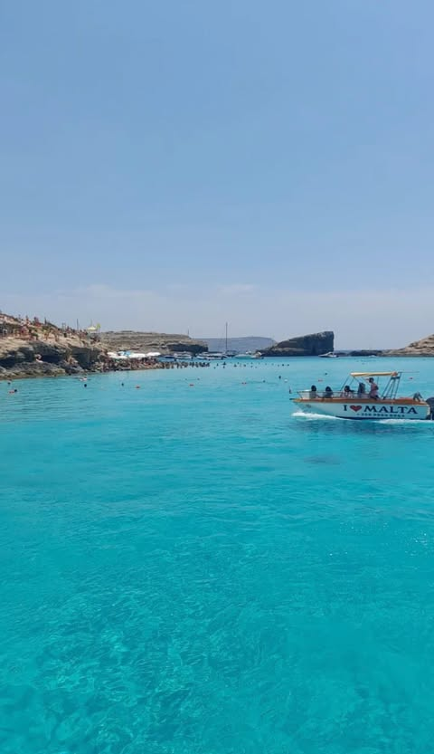
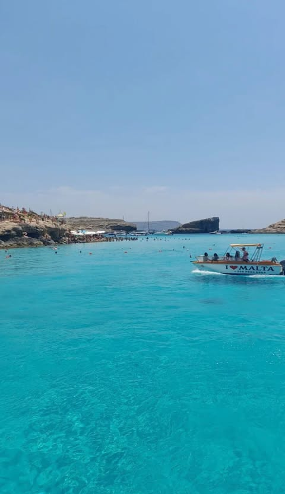

Multimédia
Fotografias


 



Vídeo
Poesia
Malta falls asleep by the twilight sea,
Her gaze worn thin by too much memory.
Old walls, mute sentinels of fading lore,
Stand guard in silence, keeping secrets at shore.
The wind - a traveler with no clear aim -
Leans on warm stones, whispering without name.
Telling old tales to the unhearing air,
Stories forgotten, once told with care.
The sea bends down to kiss the wailing shore,
Speaking with tenderness, softly, once more.
Like one who consoles a friend grown apart,
It lingers, uncertain, yet close to her heart.
In narrow streets, time stumbles and delays,
Slips on echoes of forgotten days.
Shut windows stare like eyes resigned to see,
Witnessing what they've long ceased to be.
O Malta, widow of the Mediterranean deep,
Ships wave to you still, yet promises they keep.
Not to return - like children cold and blind,
Leaving their patient mother well behind.
And you, dreaming island, weary, yet bright,
Will linger forever 'twixt farewell and night.
A prayer breathed softly into the restless breeze,
Unheard by all - but whispered to sea.